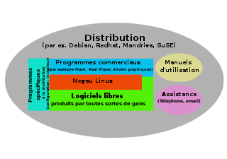
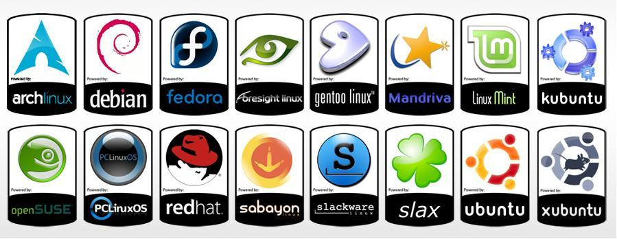
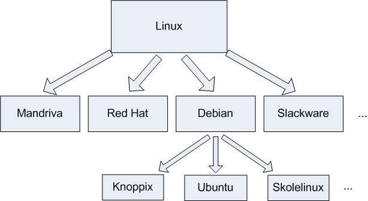
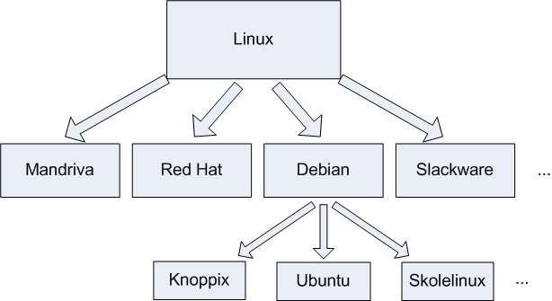

- INTRODUCTION
Une distribution Linux est un ensemble cohérent de logiciels rassemblant un système d'exploitation composé d'un noyau Linux et d'applications,la plupart étant des logiciels libres.On peut aussi utiliser la dénomination distribution GNU/Linux pour les distributions rassemblant des logiciels du projet GNU.
Une distribution Linux est composée:
• Du noyau
• Des outils d’environnement
• D’un logiciel d’installation
• D’un outil de gestion des paquetages logiciels

Linux possède plusieurs distributions qui sont:
• Debian
• Ubuntu
• Red Hat Entreprise Linux (RHEL)
• SUSE
• Fedora
• Centos
• OpenWRT
• Kali
• Gentoo
• ArchLinux

- PLUS D'INFORMATION
On peut distinguer 2 types de familles de distributions:
Si les outils“maison”des distributions(services,paquetages,…)et leurs comportements par défaut font toujours la différence,les procédures et les syntaxes deviennent de plus en plus similaires.
Aussi,les concepteurs de logiciels laissent la plupart du temps leur code ouvert,ce qui invite à les compiler soi-même dans leur dernière version.Même si la distribution et l’installation de binaires déjà compilés par les mainteneurs des distributions reste une préférence,de plus en plus de projets logiciels proposent de plus en plus leurs propres dépôts de paquetages.Voici une liste non-exhaustive des distributions généralistes et leurs dérivés,par famille:
• Debian,Ubuntu,Kali,Mint
• Redhat,CentOS,Fedora
• Slackware,Suse,OpenSuse
Ces distributions sont plus spécifiques.Elles disposent chacunes de leur propre communauté,histoire et objectif.Par exemple,
• OpenWRT
• Archlinux
• Gentoo
• CoreOS
Enfin,on connaîtra aussi bon nombre de distributions spécialisées qui remplissent un objectif assez précis.Elles se basent sur l’une ou l’autre des distributions généralistes ou spécialisées.Kali Linux est un bon exemple:basée Debian,elle propose ses propres dépôts pour des logiciels de sécurité.

- Distributions Généralistes
Si les outils“maison”des distributions(services,paquetages,…)et leurs comportements par défaut font toujours la différence,les procédures et les syntaxes deviennent de plus en plus similaires.
Aussi,les concepteurs de logiciels laissent la plupart du temps leur code ouvert,ce qui invite à les compiler soi-même dans leur dernière version.Même si la distribution et l’installation de binaires déjà compilés par les mainteneurs des distributions reste une préférence,de plus en plus de projets logiciels proposent de plus en plus leurs propres dépôts de paquetages.Voici une liste non-exhaustive des distributions généralistes et leurs dérivés,par famille:
• Debian,Ubuntu,Kali,Mint
• Redhat,CentOS,Fedora
• Slackware,Suse,OpenSuse
- Distributions Spécifiques
Ces distributions sont plus spécifiques.Elles disposent chacunes de leur propre communauté,histoire et objectif.Par exemple,
• OpenWRT
• Archlinux
• Gentoo
• CoreOS
Enfin,on connaîtra aussi bon nombre de distributions spécialisées qui remplissent un objectif assez précis.Elles se basent sur l’une ou l’autre des distributions généralistes ou spécialisées.Kali Linux est un bon exemple:basée Debian,elle propose ses propres dépôts pour des logiciels de sécurité.

- CLASSEMENT